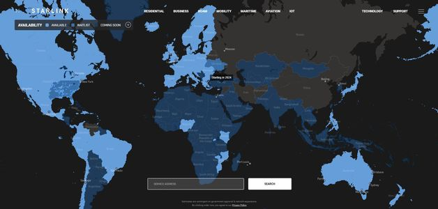

15 Starlink uydusu daha uzaya gönderildi!
Amerikan uzay mekiği ve roket üreticisi SpaceX, Falcon-9 adlı roketiyle 15 Starlink uydusunu uzaya gönderdi

Son dönemlerin Twitter ile gündemde olan ismi Elon Musk'ın sahibi olduğu uzay mekiği ve roket üreticisi SpaceX çalışmalarını hızla sürdürüyor. Geçtiğimiz hafta 54 adet uyduyu yörüngeye gönderen ABD'li uzay teknolojileri şirketi yeni Falcon-9 roketi ile uzaya 15 Starlink uydusu daha çıkarttı.
HEDEF 42 BİN ALÇAK YÖRÜNGE UYDUSU
Alçak yörüngede hizmet veren ve bu sayede gecikme süresini diğer uydulara göre çok daha düşük seviyelerde tutmayı başaran Starlink, belirlenmiş yer alıcı-vericileriyle iletişim kuran, uydu sayısını 4.000'in üzerine çıkarttı. Şirket kısa vadedeki hedefinin toplamda, yaklaşık 12.000 uydunun konuşlandırılması ve daha sonra 42.000'e genişletilmesi olarak açıkladı.
TÜRKİYE'DE NE ZAMAN HİZMET VERECEK
Ülkemizde şu anda test aşamasında olan Starlink'in Gebze-Bilişim Vadisi'nde bir alıcı merkezi bulunuyor. Buradan gerçekleştirilen testler sonrasında SpaceX'in alçak yörünge uyduları ile sağladığı internet erişiminin 2024 yılında Türkiye'de hizmete gireceği açıklandı.